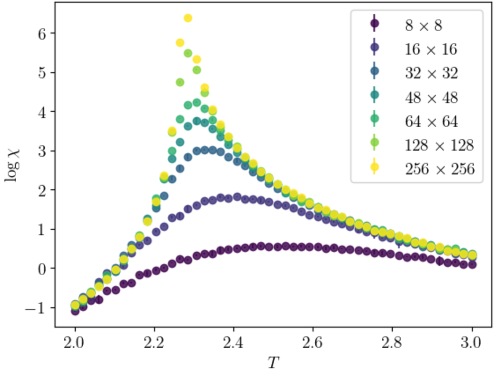
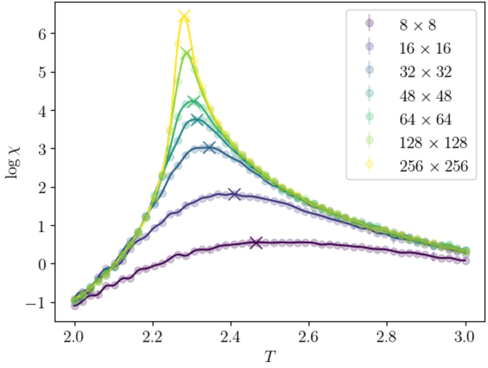
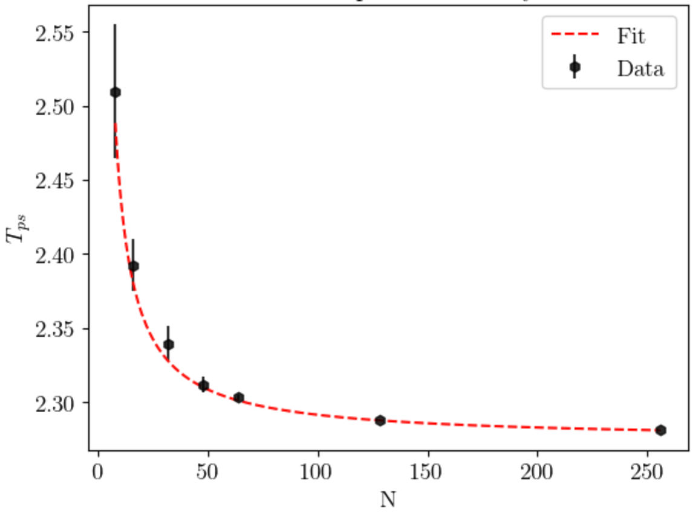
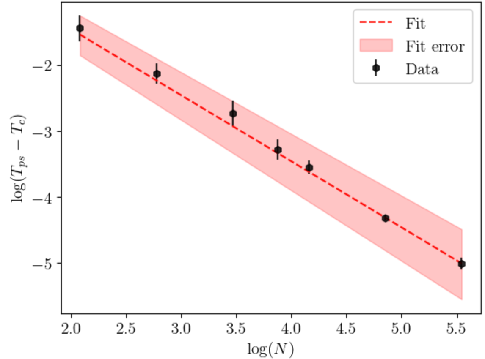
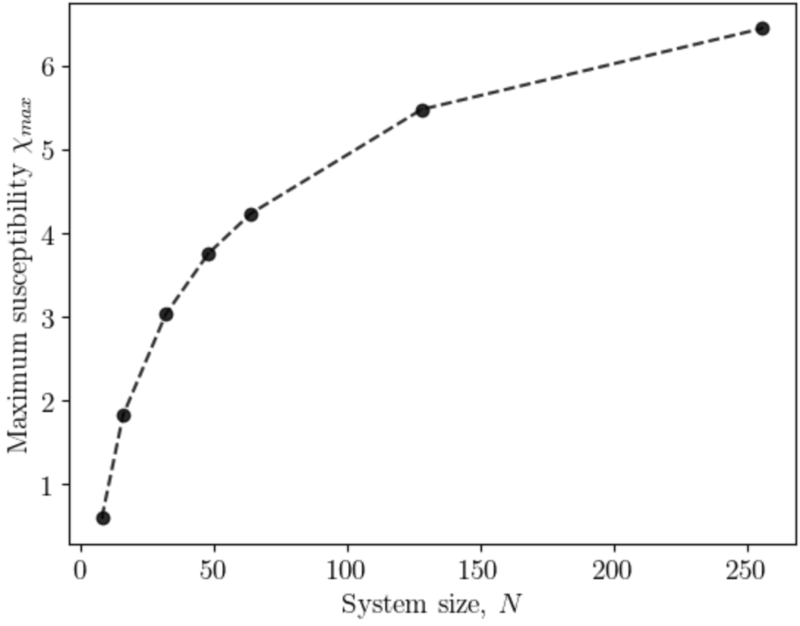
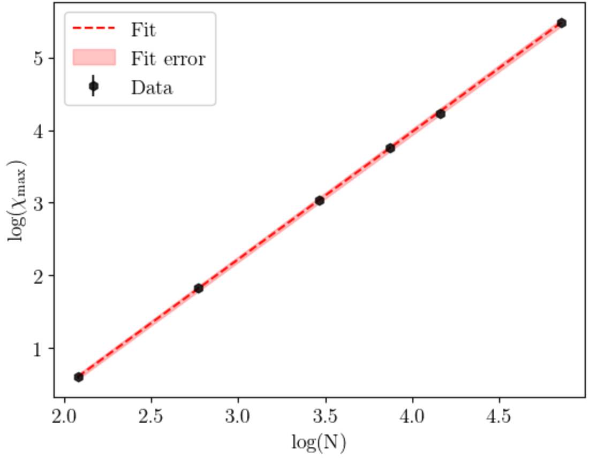
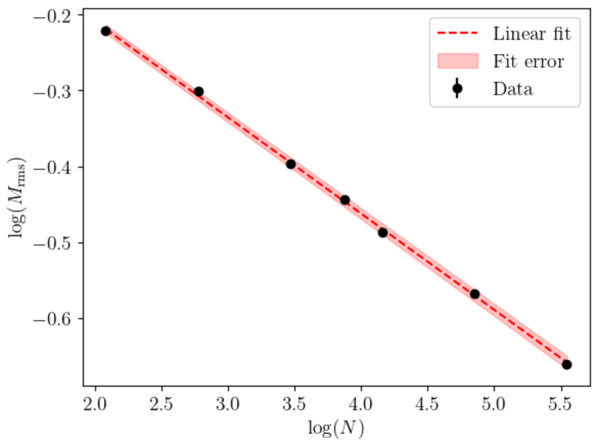

Critical Exponents
The critical exponents, as outlined in the theory section, are another way to find \(T_c\), and also generally help to describe the behaviour of different macroscopic properties nearby the critical temperature.
Finding the maximum value of the susceptibility
Finding the maximum value of the suscpetibility was critical to finding the critical exponents, as well as the value of \(T\) for which they occur. As shown in Fig. 1, the susceptibility (here shown as \(\log\chi\)) forms curves with certain peaks, which can be approximated by a polynomial.

However, even by limiting the range, it was found that plotting a simple polynomial around some “guessed” peak was inacurate over many runs (important for the forthcoming bootstrap error method), due to the noise in the data. The Savitsky-Golay approach was used to smooth the data, then find a maximum from this smoothed data (see Fig. 2). It is much more consistent due to the smoothing, as well as having little effect on important properties, including peak height (which is important here)

Error on the maximum
The error can be estimated from the peak points by running a bootstrap method on the data. This essentially runs the fitting function multiple times, where the datapoints are skewed by a certain amount related to their error (specifically they are skewed by a normal distribution with standard deviation equal to their error). This means that error estimates come from the error on the original data points, which is important here. We also find error in the temperature values of the maximums.
Finding the first critical exponent
The first critical exponent to find is \(\nu\), as it can be found independently from the other parameters. This is done by plotting the psuedocritical point of each system against its size. From the Theory section, this should follow a relationship:
\[ \bigg(T_c(N^2) - T_c(\infty)\bigg) \propto N^{-1/\nu} \]
or simply
\[ T_{ps} = T_c + AN^{-1/\nu} \]
By using scipy.optimize.curve_fit and setting the fit function to the above equation, it can be found from this data that \(\nu = 1.00 \pm 0.07\), equalling the analytical value, as can be seen in Fig. 3-4.


The fitting method has a large error due to fitting directly to the data, rather than directly to the log-log plot as done for the other critical exponenets. This was done because \(T_c\) was assumed unknown before, and in order to observe a linear relationship in the log plot, this value must be subtraceted from each \(T_{ps}\). Hence, fitting directly in Fig. 3. was necessary to determine this first, as well as the other factors - however as discussed this then leads to a large error due to the nature of this fit. Regardless, a value of \(\nu = 1.00 \pm 0.07\) (error on inverse is \(\Delta \nu = \nu^2 \Delta (1/\nu)\)) is very close to the expected value of \(1\) from the analytical solution.
Finding the second critical exponent
The second critical exponent to find is \(\gamma\), which can be computed from a log-log plot of \(\chi_\text{max}\) aginst system size (as seen in the Theory section). The slope of this plot is equal to \(\gamma / \nu\), and since we know \(\nu=1.00 \pm 0.07\), is just equal to \(\gamma\) (plus the error on \(\mu\)). This can be seen in Fig. 5-6.


This finds a slighlty unexpected value of \(\gamma = 1.726 \pm 0.07\) (error calculated via \(\Delta \gamma = \sqrt{(\Delta(\gamma/\nu))^2 + (\Delta (1/\nu))^2}\)). Whilst this is not far off, it is not perfect.
Finding the third critical exponent
The third critical exponent to find is \(\beta\). This is found in a very similar way to the previous two critical exponents.

This finds a value of \(\beta=0.13\pm 0.07\). This is not far from the expected value.
Discussion
The crtical exponents here align with the expected values found analytically quite well. However, there is a large error due to the fitting done to originally find \(\nu\), which transpires into a large error on other critical exponents.
| Critical Exponent Found | Value | Error |
|---|---|---|
| \(\nu\) | 1.00 | 0.07 |
| \(\gamma\) | 1.73 | 0.07 |
| \(\beta\) | 0.13 | 0.07 |
The large error in the fitting for \(\nu\) ultimately arises from a large error in the maximum susceptibility for the smaller system sizes, since they have much “flatter” distributions, and are more likely to have large shifts in a maximum. The smoothing function did help to avoid this somewhat and reduce the error, however it is still large. Removing these from the fitting also is not successful, since then the fit has too few data points to fit to and provides wildy innacurate results. A better approach then might be to use a finer range of system sizes (with more system sizes overall), however due to computational limitations this was deemed not plausible.
Running the system for longer may also have stabilised the smaller systems, however, for the same reason stated above, this was deemed not plausible.